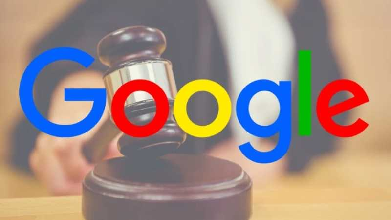

Feds vs. Google: What DOJ's Antitrust Lawsuit Means for the Tech Titan
By Stephen Shankland
2023 January 25
The Justice Department wants to force Google to divest some of its online ad business, a move that would cut off a big source of revenue.
Google has another major legal headache. On Tuesday, the US Justice Department and eight states sued the search giant, arguing it abused its position at the center of the online advertising industry to lock out competitors and claim profits for itself that should have gone to advertisers and publishers.
The case concerns a part of Google's operations that isn't especially familiar to most of us. But it's important, because advertising revenue funds most of what Google does, like search, Chrome and Gmail.
The new Justice Department lawsuit, which you can read below in full, alleges Google uses anticompetitive behavior to maintain a monopoly in digital ads. Allegations include Google buying up competition and strong-arming advertisers into using Google's ad tech over competing companies.
"Competition in the ad tech space is broken," the lawsuit says. "Google has corrupted legitimate competition in the ad tech industry by engaging in a systematic campaign to seize control of the wide swath of high-tech tools used by publishers, advertisers, and brokers, to facilitate digital advertising. Having inserted itself into all aspects of the digital advertising marketplace, Google has used anticompetitive, exclusionary, and unlawful means to eliminate or severely diminish any threat to its dominance over digital advertising technologies."
The result, according to the lawsuit, is a durable, profitable dominance that hurts other companies. "Google uses its dominion over digital advertising technology to funnel more transactions to its own ad tech products, where it extracts inflated fees to line its own pockets at the expense of the advertisers and publishers it purportedly serves," the lawsuit says.
The attorneys general of California, Colorado, Connecticut, New Jersey, New York, Rhode Island, Tennessee and Virginia joined the Justice Department in the online ad lawsuit. It piles on to a 2020 antitrust lawsuit the DOJ filed that argues Google stifled competition in search, paying partners like Apple and Samsung to ensure Google remains the default search engine on mobile devices.
"Any monopoly case filed by the DOJ is a big deal," said George Hay, a senior professor of law and economics at Cornell Law School, with an expertise in antitrust law. "They don't happen very often, and even less so against a company as well known and as prominent as Google."
For now, don't expect any changes in the ads you'll see online. The Justice Department's lawsuit doesn't seek to halt Google's ad tech at the moment. Any changes that would occur to Google's ad business depend on the influence and outcome of the legal proceedings, which could take years.